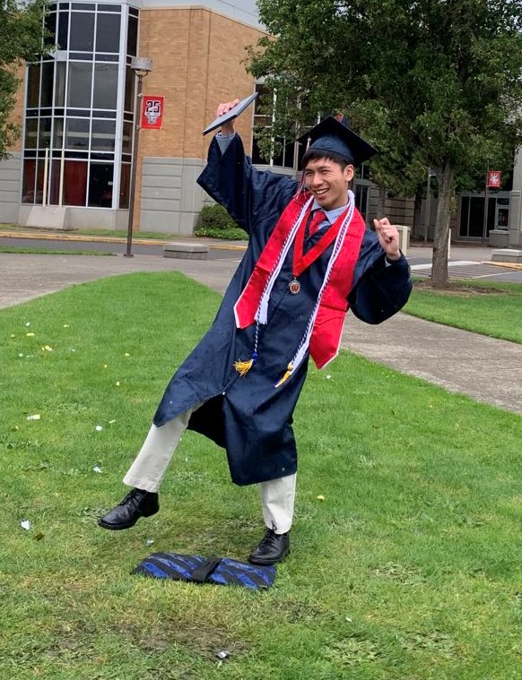

Max Lin (Theguyhere)
About Me
Let me introduce myself
My Story
 For most of my childhood and as far as my memory can take me, I lived and grew up in the suburbs on the fringes of Portland, Oregon. Before settling there, I lived briefly in Pennsylvania, 温州 (Wenzhou, China), and California, all before I began going to school. Even now as I attend university, I am still here residing at my home base as I cruise through another semester of remote learning while I wait for the COVID-19 pandemic to settle down. I am definitely biased, but I couldn't have asked for a better environment to develop in.
For most of my childhood and as far as my memory can take me, I lived and grew up in the suburbs on the fringes of Portland, Oregon. Before settling there, I lived briefly in Pennsylvania, 温州 (Wenzhou, China), and California, all before I began going to school. Even now as I attend university, I am still here residing at my home base as I cruise through another semester of remote learning while I wait for the COVID-19 pandemic to settle down. I am definitely biased, but I couldn't have asked for a better environment to develop in.
And develop I did. It was always this innate nature in me to be creating something, whether it be some abstraction in my mind or something physical. Way back when I didn't play computer games, I would construct these fantastical RPGs in my mind and wander my dwelling fighting enemies. It wasn't long before I stumbled upon my first concrete medium of expression: Legos. These plastic building blocks gave me the opportunity to bring my thoughts into reality through the cities and war fleets that I built with my own two hands. As I matured and developed new skills into 5th grade, I began writing stories. The complex plots in my head and ideas I couldn't construct were finally freed in the form of words in the novels I wrote. From then until the end of middle school, I populated a collective of hundreds of pages with the intricate fantasies and realities that I dreamed of. It was both a practice of creativity and an expression of self.
Around this time, I began to dabble in piano and music. I technically started playing piano around 3rd grade, but I stopped getting lessons after my parents saw how I didn't practice well. I eventually picked it back up and began learning pieces on my own. There was a certain beauty in this form of expression that drew me towards it, something I felt that was missing from before. As I searched for more pieces, I found that I didn't like some of the pieces available and began composing my own transcriptions of songs I loved. My high school hobbies centered around this melodic form of expression as I experimented with composing piano, instrumental, EDM, and even Vocaloid songs. To share what I had created with the world, I created a YouTube channel where all my efforts reside.
Complimenting this was the art classes I took in Saturday/Sunday school. I began classes in elementary school and continued them all the way through my junior year of high school, learning how to sketch, paint, and critique visual arts. The combination of music, art, and video making forged the beginnings of the YouTube channel that I have today. With the channel at my disposal, I started to focus on another area that I felt like I was lacking in: speaking. Here begins my podcast, a project that is active to this day. Every other week, I would sit down and pour out my thoughts in front of a camera. Although rough and strange at first, I was determined to keep going for the sake of self-improvement. It later dawned on me that self-improvement was in fact an art quite similar to music and visual arts. There was no objective correctness and no formula for success, a fusion of intricacy, grace, and humility had to be applied to the process.
As I depart for my journey through higher education, I've felt a change in the wind patterns of my life. Another era of experimentation has begun, this time in the future that I want to create. I've typically had a strong idea of what career path I wanted to take, but I've since learned that in this rapid growth phase nothing remains static. The best approach is to take things step by step...
Philosophy
Purpose
People don't buy what you do; they buy why you do it. And what you do simply proves what you believe. ~ Simon Sinek
One of the most important ideas that I've borrowed from Simon Sinek is the idea of the Golden Circle: start with the why, build the how on top of that, and the what will follow. My goal is to make every decision and action I take purposeful to ensure my collective efforts amount to something meaningful.
Momentum
Intensity makes a good story. Consistency makes progress. ~ James Clear
While many like to focus on the present state of people, I have found that observing momentum is more useful. Another model borrowed from Sinek is the idea that life is an infinite game, meaning there is no "end goal." What matters is not current state but relative progress, and that's why measuring momentum is critical.
Essentialism
To discern what is truly essential we need space to think, time to look and listen, permission to play, wisdom to sleep, and the discipline to apply highly selective criteria to the choices we make. ~ Greg McKeown
Time and effort are scarce resources. With so many opportunities abound, one must make tough choices. Spreading efforts too thin results in poor work while concentrating efforts too much suffers from diminishing returns, so a balance of using these resources must be found. Constantly reassess what is worth pursuing.
Execution
There's a tremendous bias against taking risks. Everyone is trying to optimize their ass-covering. ~ Elon Musk
While theoretical frameworks and knowledge saves the need to reinvent the wheel, I believe one only truly understands what is happening when they get their hands dirty and become intimate with the reality of the subject. Live life lean, continuously executing and iterating. There will always be more preparation to be done, but sometimes you just have to go.
Interests
Engineering
Design is not how it looks like and feels like. Design is how it works. ~ Steve Jobs
These are the modern magicians. Simply by reorganizing the known, a wholly new system emerges that has properties vastly different from its constituents. While people in this discipline tend to focus on how something will work, I believe more emphasis should be placed on how something will be created, perceived, exploited, and retired. The whole life cycle matters.
Computer Science
We are all shaped by the tools we use, in particular: the formalisms we use shape our thinking habits, for better or for worse, and that means that we have to be very careful in the choice of what we learn and teach, for unlearning is not really possible. ~ Edsger W. Dijkstra
Like quite a few terms in English, computer science isn't really about the science of computers but more about abstraction of complex systems. How information flows and how calculations are made don't necessarily require computers, computers just make the operations much faster and scalable. Not only is this discipline ubiquitous in the modern world, but it instills a way of thinking useful to other disciplines.
Economics
Every time you spend money, you're casting a vote for the kind of world you want. ~ Anna Lappe
Economics gets a bad rep for being an attempt to rationalize the irrational and solely about making money, but that is merely the consequence of the contemporary economic models being taught. I find this discipline to be more about how limited resources are managed by many actors, and how a vast array of actors can coordinate in many ways.
Governance
Government is an art, not a science, and an adventure, not a planned itinerary. ~ Donald Creighton
I avoid using "politics" as that typically brings a hostile, negative connotation, especially within the current divisive atmosphere. I instead find intriguing how a group of actors govern themselves, make collective decisions, and observing the systems function. Questions of governance address our most deep-seated biases and asks us to dig for that moral compass. Avoiding these questions merely delays and amplifies conflict.
Music & Art
We don't make mistakes, just happy little accidents. ~ Bob Ross
The beauty in the arts comes down to the fact that value is derived from our individual interpretations of what each work is about and how the artist arrived there. Subjectivity is embraced, not something we pretend doesn't apply. What we see in artistic pieces may as well be a reflection of ourselves.
Current Focus
Goals to accelerate personal development and bring value to humanity.
- Establish habits and mindsets for sustainable personal growth
- Become familiar with Web3 development and technologies
- Build a solid foundation of knowledge, skills, and experience for my future career targets